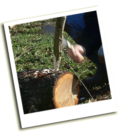

The 2009 competition was held on Saturday 28 February 2009
Location: Dunsbury Farm, Brook. By kind permission of Mr & Mrs P Seeley
The competition's return to Dunsbury Farm was a hugely popular choice, with the stunning views across the sea to Dorset forming the backdrop to what was one of the more memorable competitions in recent years.
Once more the entry numbers hit record highs, with the entire length of hedge laid throughout the day- not a single stem was left standing by the competitors, who cut eighteen pitches between them. Additionally there was once more a demonstration pitch by Peter Tonks, a former supreme national champion who this year chose to lay in Midlands style, which generated much interest as this style is hardly known on the Island.
Other attractions included a demonstration of hurdle-making from local hurdle-maker Richard Bolwell, and the usual impressive display of billhooks.
The crowd assembled at 1530 to hear the results, and once more judges Paul Sivell and Alan Ashby kept the punters in suspense as they went back to review their marks on more than one occasion before they finally emerged from their huddle.
Some surprises were in store as former novice champion Rob Richards was promoted this year to the Open class, and in this, his first ever Open event managed to tie for fourth place with former champion Dick Pulleine, who had been hoping to regain his pole position. Long-standing competitor Tom Murphy of Living Landscapes improved on his previous year's performance to take a respectable third place, whilst the top slots were taken by the two National Trust wardens; Sean Adams being just beaten by reigning Open champion Paul Davies.
In the Novice class, Isle of Wight Council countryside ranger Rick Temple made a remarkable leap from 5th place in 2008 to at last lift the Mary Sitch Novice cup, to his obvious delight. The judges pointed out how very close this class was, with runners up Paul Trickett and Alex Holmes being only one and two points behind respectively. As is often the case the Novice class proved one of the more exciting parts of the event for those keen on the competitive element.
The Team class had a record eight entrants, with six teams from the Isle of Wight College, and another first for the competition: Dunsbury Farm provided a home team led by landowner Patrick Seeley. All were smartly dressed in 'Dunsbury Lamb' sweatshirts in case there was any doubt! A new team also came forward in Brighstone local David Harding with Vivienn Jackson, who were welcomed to their first competition.
| Open Class | Novice Class | Team Class | |
| 1st | Paul Davis | Rick Temple | Honey Badgers (Peter Smith, Arran Hobday) |
| 2nd | Sean Adams | Paul Trickett | Return of the Wench Layers (Leigh Taylor, Nat Purcell, Di Simmons) |
| 3rd | Tom Murphy | Alex Holmes | The Red Hot Solar Panels (Alex Ely, Jay Southcott, Luke Abraham) |
| 4th | Dick Pulleine joint with Rob Richards |
The East Ryders (David Pitman, David Long, Alex Gilbert) | |
| 5th | - | The Ladybirds (Hollie Higgins, Kara Newberry, Abbie Gregory) | |
| 6th | Oswald Hoskyns | Dunsbury Farm (Patrick Seeley, Paul Johnson, Jim Valentine) | |
| 7th | James Cook | Rough Edges (David Harding, Vivienn Jackson) | |
| 8th | The Bush Bashers (Jordan Harper, Tom Greaves, Simon Creed) |
The W Hurst & Sons Cup for the best laid hedge using hand tools only was retained by Rob Richards.
The Wight Wildlife trophy for the best contribution to hedgelaying in 2008 was awarded by Lucy Temple to the Isle of Wight College. Dave Trevan accepted the award on behalf of the college.